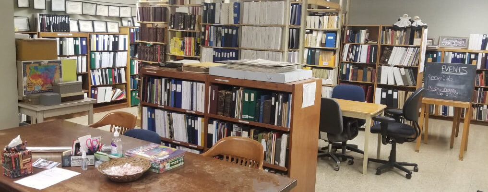

Welcome to Wayne County Genealogical Society of Richmond, Indiana
Wayne County Genealogical Society is a 501(c)4 non-profit organization focused on preserving the history of Wayne County, Indiana, and assisting those interested in learning about Wayne County history and ancestors. In February 2002, WCGS met the requirements and became a chapter of the Indiana Genealogical Society.
We do Genealogical Research
WCGS Research Committee volunteers do research in regard to specific requests for information, on a first come-first served basis. (At times, there may be some backlog in doing the research, depending upon the number of requests for information currently on hand.) Request requirements and the current costs of doing research may be obtained by email or writing the Wayne County Genealogical Society--Research Committee.
We have a Family History Library
WCGS operates a Family History Library, located in the lower level of the First Friends Church, 2010 Chester Boulevard, Richmond, IN. To confirm the current days and hours of operation, contact us via email or by writing the Wayne County Genealogical Society.
Library Hours:
Monday: 10:00 a.m. to 4:00 p.m. Doors are always locked so please call 765.277.9606 or 765.277.1207 and someone will come let you in. Closed in December and January, on all holidays and during inclement weather. Other hours by appointment.
Meetings
Second Saturday of each month (except December and January), at 10:00 a.m. in the lower level of the First Friends Church, 2010 Chester Boulevard, Richmond, IN. Most meetings feature a speaker on a genealogical or historical subject, and include a business meeting. In September, the local members meet for a picnic, and a year end banquet is held in November. You are also welcome to join our Facebook Group.
Meetings are open to all persons who wish to attend.
Membership
Anyone interested in genealogical pursuits in Wayne County may become a member. Yearly dues are $20 per person. The WCGS quarterly newsletter "Family Pathways" is sent to each society member (cost of newsletter is included in the dues). For additional information about membership or dues, inquire by email or by writing the Wayne County Genealogical Society.
Wayne County "First Families" Group
WCGS members who can prove their lineage back to a person who was a resident of Wayne County in 1830, may apply for acceptance into the "First Families" Group. This may be accomplished by obtaining a "First Families" application, and providing the required information, documentation and costs. For the current costs, application and requirements, write to WCGS "First Families" via email or by writing the Wayne County Genealogical Society.